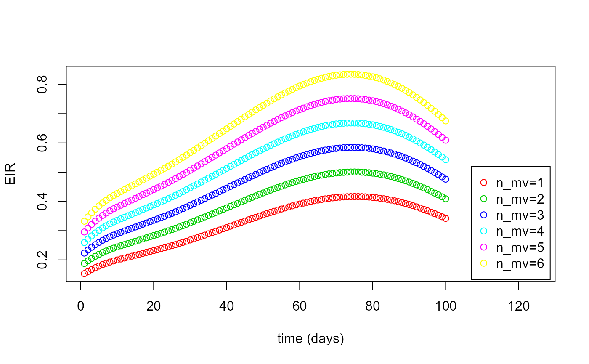
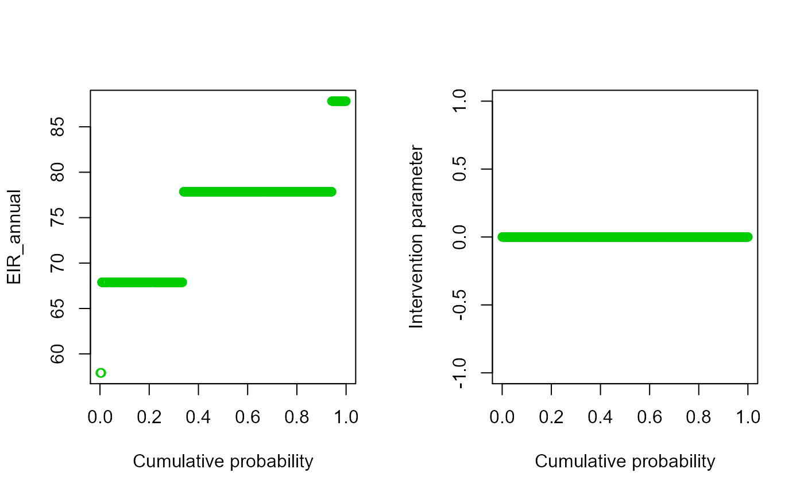
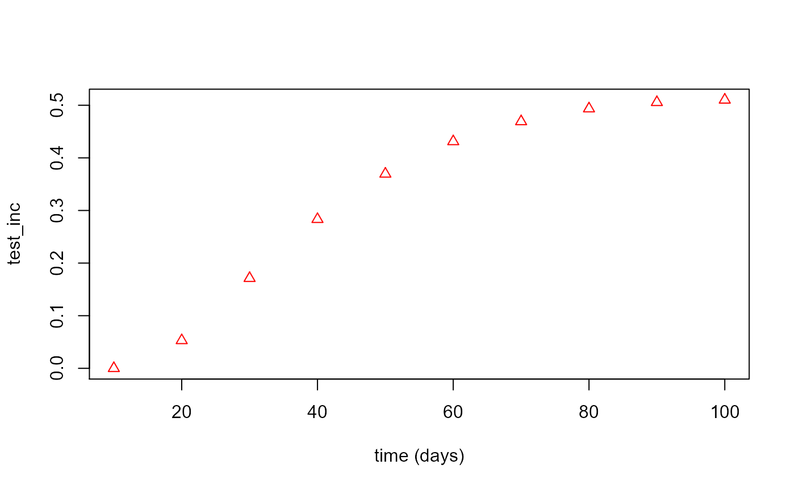
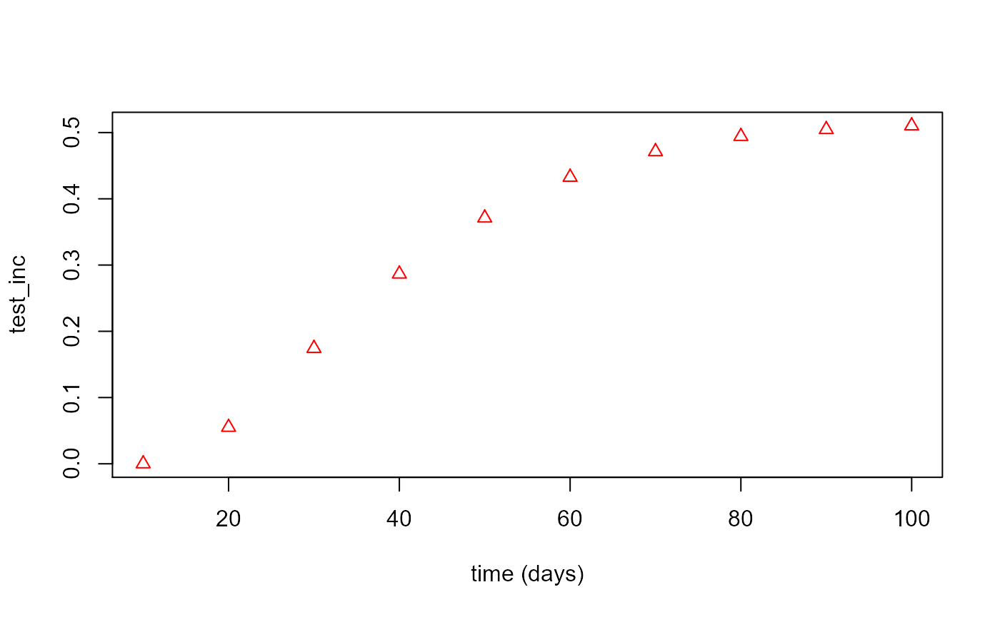
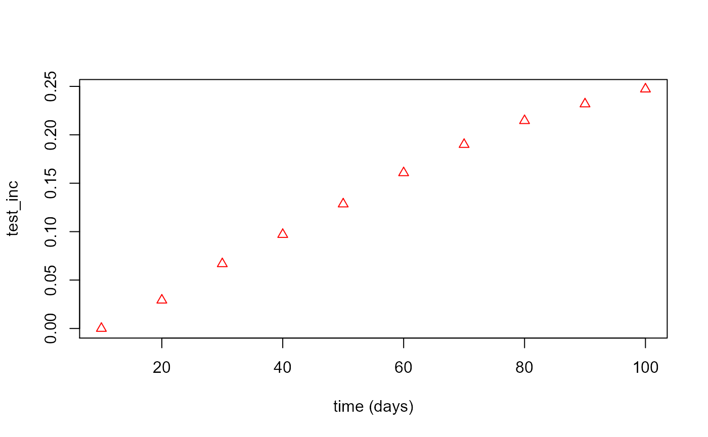
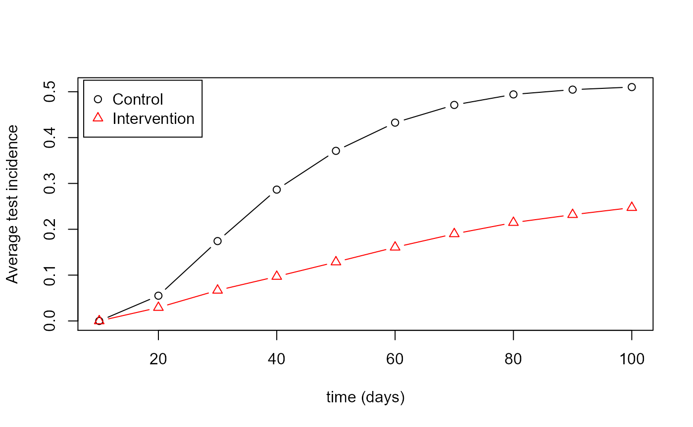

H_worked_example06.RmdThis is an example of how to take previously created main population data and and calculate the statistical power of a hypothetical field trial where the control and intervention clusters are drawn from said data.
First load the package (install it first if necessary as shown in the Installation article:
library(vectorpower)In this example, the main population data set is loaded from an RDS file created by saving the results of running the mainpop() function (see Worked Example 2).
# Load main population data
mainpop_data <- readRDS(file=url("https://github.com/KeithJF82/vectorpower/raw/master/inst/extdata/DemoFolder1/mainpop_data.Rds"))The mainpop_data list contains the parameters used to calculate the main population data, including year-round benchmark values like the annual EIR, as shown below. These can be used to generate the trial cluster population parameters, as described in Worked Example 3.
data_view1=data.frame(n=mainpop_data$annual_data$n_mv,EIR_annual=mainpop_data$annual_data$EIRy)
matplot(x=data_view1$n,y=data_view1$EIR_annual,type="p",pch=1,xlab="Dataset",ylab="Annual EIR")Similarly, the mainpop_data list contains benchmark output values which can be viewed with the help of the get_mainpop_data and plot_mainpop_data functions as shown below and as described in Worked Example 2. These can also potentially be used as inputs for generating clusters.
data_view2=get_mainpop_data(input_list=mainpop_data,benchmark="EIR",set_n_mv=mainpop_data$n_mv_set)
plot_mainpop_data(data_view2)
Power is computed using the power_compute() function. The majority of the parameters are the same ones used for the crt_combined() function, as described in Worked Example 5. The additional inputs shown at the top of the code section below are the parameters controlling the power calculation. The power_compute() function can be used for superiority, equivalence and non-inferiority tests(Link) by changing the trial_type parameter.
# Set up power calculation inputs
trial_type="sup" # Trial type (superiority, equivalence, non-inferiority - "sup", "eq", "ni")
effect_size_sign="Positive" # Sign of effect to check for ("Positive" or "Negative")
alpha=0.05 # Significance level
delta_eq=NULL # Delta for equivalence trials (only used if trial_type="eq")
delta_ni=NULL # Delta for non-inferiority trials (only used if trial_type="ni")
n_sims=100 # Number of iterations
# Set up inputs for cohort modelling
test_time_values=10.0*c(1:10) # Time points at which testing takes place
n_clusters=10 # Number of clusters to generate
n_patients=100 # Number of patients per cluster
data_level="Individual" # Data type to output from model and use for power calculation ("Cluster" or "Individual")
benchmark="EIR_annual" # Main population data parameter to use as benchmark for generating clusters
age_start=0.5 # Minimum age of cohort patients
age_end=10.0 # Maximum age of cohort patients
test_type="RDT" # Type of test administered to patients ("clin" = clinical, "RDT" = rapid diagnostic test)
flag_pre_clearing=1 # Integer indicating whether patients given pre-trial prophylaxis (if 1, place all patients into prophylaxis category at start)
censor_period=0.0 # Time period after a positive test during which a patient is not counted towards incidence
flag_reactive_treatment=0 # Integer indicating whether patients are automatically given prophylaxis after a positive test (shifting them into treatment category if a clinical case, prophylaxis category otherwise)
prop_T_c = 0.9 # Proportion of clinical cases receiving treatment independent of trial-related testing
benchmark_mean=75.0 # Mean value of benchmark to use to create distribution
benchmark_stdev=5.0 # Standard deviation of benchmark to use to create distribution
int_mean=0.1 # Mean value of intervention parameter (ATSB mortality rate) in intervention clusters
int_stdev=0.0 # Standard deviation of intervention parameter in intervention clustersThe power_compute() function uses the crt_combined to run n_sims.n_clusters control clusters (all drawn from the control cluster parameter distribution given by benchmark_mean and benchmark_stdev, with the intervention parameter equal to zero) and n_sims.n_clusters intervention clusters (generated using benchmark_mean, benchmark_stdev, int_mean and int_stdev).
# Run power calculation
results<-
power_compute(mainpop_data=mainpop_data,n_clusters=n_clusters,n_patients=n_patients,data_level=data_level,alpha=alpha,
effect_size_sign=effect_size_sign,trial_type=trial_type,delta_eq=delta_eq,delta_ni=delta_ni,n_sims=n_sims,
benchmark=benchmark,age_start=age_start,age_end=age_end,test_time_values=test_time_values,
test_type=test_type,flag_pre_clearing=flag_pre_clearing,censor_period=censor_period,
flag_reactive_treatment=flag_reactive_treatment,prop_T_c=prop_T_c,
benchmark_mean=benchmark_mean,benchmark_stdev=benchmark_stdev,int_mean=int_mean,int_stdev=int_stdev)
#>
#> Simulating control clusters
#> Simulating intervention clusters
#> Outputting control and intervention cluster data (individual level)
#> Calculating power
#> Power = 1In the case of the example used here, power_compute() returns a power value very close to 1 because the intervention parameter (ATSB mortality rate) has the same relatively high value in all intervention clusters and there is relatively little spread in the benchmark parameter between clusters, meaning that the vast majority of simulated intervention clusters show a drop in incidence of positive test cases relative to control clusters.
The output of power_compute() contains information on the clusters it generated for the purposes of the power calculation, which can be viewed as shown below for the control clusters:
par(mfrow=c(1,2))
matplot(results$cluster_list_con$CP_B,results$cluster_list_con$B,type="p",pch=1,col=3,
xlab="Cumulative probability",ylab=benchmark)
matplot(results$cluster_list_con$CP_I,results$cluster_list_con$I,type="p",pch=1,col=3,
xlab="Cumulative probability",ylab="Intervention parameter")
Similarly for the intervention clusters:
par(mfrow=c(1,2))
matplot(results$cluster_list_int$CP_B,results$cluster_list_int$B,type="p",pch=1,col=3,
xlab="Cumulative probability",ylab=benchmark)
matplot(results$cluster_list_int$CP_I,results$cluster_list_int$I,type="p",pch=1,col=3,
xlab="Cumulative probability",ylab="Intervention parameter")
Likewise, the output of the cohort modelling across all clusters can be viewed using plot_cohort_data() as shown below:
control_plot <- plot_cohort_data(cohort_data = results$cohort_data_con,benchmark = "test_inc",flag_output=2)
int_plot <- plot_cohort_data(cohort_data = results$cohort_data_int,benchmark = "test_inc",flag_output=2)
matplot(test_time_values,control_plot,type="b",pch=1,lty=1,col=1,xlab="time (days)",ylab="Average test incidence"
,ylim=c(0,max(control_plot)))
matplot(test_time_values,int_plot,type="b",pch=2,lty=1,col=2,add=TRUE)
legend("topleft", inset=0.01, legend=c("Control","Intervention"), pch=c(1:2),col=c(1:2),
horiz=FALSE,bg='white',cex=1.0)